Як читатиРозділи 1–5 прочитай у перший день повністю — це мінімум, щоб працювати. Решту — коли дійдеш до відповідної задачі. Назви кнопок виділені так: Sync — шукай їх на екрані саме з таким написом. Номери 1 у тексті відповідають позначкам на скріншоті поруч.
01
Перший вхід і екран
Логін, команда, місяць і де що лежить
CRM — це сайт. Відкриваєш його в браузері, входиш своєю поштою й паролем, які тобі видав тімлід. Встановлювати нічого не треба.
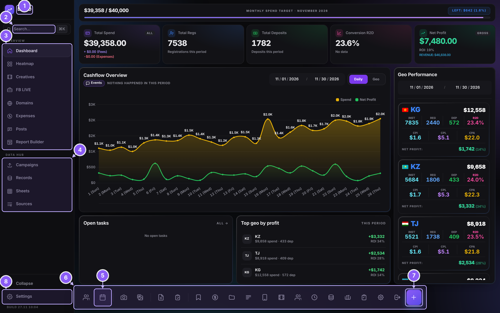
Команда — чиї дані ти бачиш.
Пошук по сторінках і інструментах (Ctrl+K).
Overview — сторінки для щоденної роботи.
Data hub — завантаження даних і довідники.
Select Month — місяць, за який рахуються цифри.
Нижня панель — інструменти (розділ 10).
Add data — завантажити статистику (розділ 3).
Settings — налаштування (розділ 11).
Після входу
Перевір команду1. Якщо назва не та, яку дав тімлід, — усе, що ти заливаєш, піде не туди. CRM про це попередить.
Перевір місяць5 — кнопка з календарем у нижній панелі. Усі цифри на головній рахуються за вибраний місяць.
Підключи Telegram: Settings8 → Integrations (розділ 11). Без нього про бан кабінета дізнаєшся, лише коли сам помітиш.
Нова версія сайтуCRM оновлюється часто. Якщо сторінка підкаже, що вийшла нова версія, — онови вкладку (F5). Номер збірки видно внизу меню (BUILD 27.11 10:04) — назви його, коли пишеш про помилку.
02
Твій робочий день
Що відкривати вранці, вдень і ввечері
Основна робота баєра в CRM крутиться навколо двох сторінок: FB LIVE (що відбувається зараз) і Dashboard (що вийшло в грошах). Решта — інструменти під конкретну задачу.
Ранок
FB LIVE → статус Banned. Що забанилось за ніч. Потім Running: чи всі кабінети крутять, у кого закінчується ліміт (кільце в панелі кабінета). Перевір Telegram — туди приходять бани й «тиша» (кабінет, який перестав крутити).
Ранок
Stat. Day у FB LIVE → календар на вчора: скільки вчора пішло по гео, кабінетах, воронках і креативах.
Вдень
FB LIVE — після Sync дивишся спенд і ліди по кабінетах, розгортаєш кабінет до кампаній та оголошень і вимикаєш те, що не працює. Правила (розділ 6) роблять частину цього самі.
Вдень
Запуски. Нові кампанії — через Templates у FB LIVE. Креативи на тест — через чергу в Creative Analyzer, унікалізація — в Uniqueizer.
Вдень
Коментарі.Comments у панелі кабінета або Pages. Нові коментарі приходять і в Telegram.
Вечір
Add data: завантажуєш звіт Facebook і Keitaro за день. Тільки після цього цифри з'являться на Dashboard, у Heatmap і в Report Builder.
Вечір
Dashboard — спенд, депозити, профіт і план на місяць. Daily Reports у нижній панелі — денний звіт, якщо команда його веде.
Важливо розумітиFB LIVE показує дані напряму з Facebook (синхронізація щогодини або кнопкою Sync). Dashboard, Heatmap, Creatives і Report Builder рахують з того, що ти завантажив через Add data. Тому вдень на Dashboard «сьогодні» порожньо — це нормально.
03
Як дані потрапляють у CRM
Add data: файл Facebook + файл Keitaro
Статистику не треба вбивати руками. Ти вивантажуєш два звіти — з Facebook Ads Manager і з Keitaro — і перетягуєш їх у вікно Add data. CRM сама зводить їх по даті, кабінету, гео й воронці.
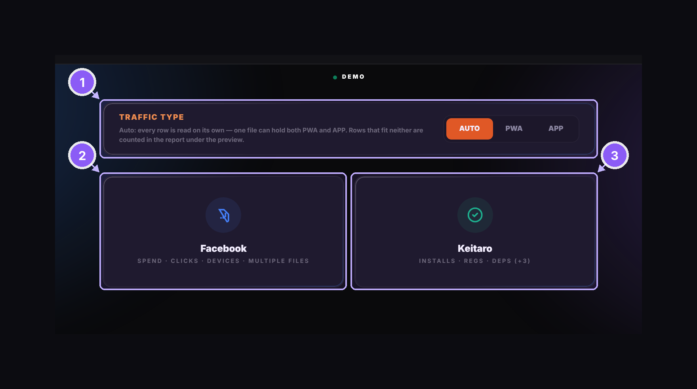
Traffic type — лиши Auto: CRM сама розпізнає по назві кампанії, де PWA, а де APP. PWA / APP — лише щоб виправити хибне розпізнавання.
Facebook — звіт з Ads Manager (можна кілька файлів одразу): спенд, кліки, пристрої.
Keitaro — звіт трекера: інстали, реги, депозити.
Перед імпортом: кабінети й воронки мають бути в CRM
Імпорт бере з довідників Data hub → Sources те, чого немає у файлах. Новий кабінет чи нову воронку спершу додай, а вже потім заливай статистику.
Що додати
Де
Що буде, якщо забути
Кабінет
Sources → Cabinets → Link cabinet: ID кабінета, агент, часовий пояс, профіль
Цифри Keitaro по кабінету не зайдуть зовсім. Keitaro віддає час у своєму поясі, і без поясу кабінета CRM не знає, в який день їх покласти, — тому відкидає. Спенд із Facebook зайде, а інстали, реги й депи — ні. Без агента кабінет запишеться як Direct(0%) і комісія агента не порахується.
Воронка
Sources → Funnels: KTID → назва воронки
Воронка запишеться як Unknown (KTID), офер може не визначитись — тоді дохід порахується лише за ставкою DEFAULT для гео, або не порахується, якщо її немає.
Попередження дивись до збереженняПід переглядом CRM пише, що не доїхало: «Skipped — no timezone linked» (кабінет без поясу), «accounts have no agent» (без агента). Звіти згорнуті — розгорни їх. Побачив — додай кабінет у Sources і залий файли ще раз.
Як імпортувати
Натисни фіолетову + унизу праворуч (або Data hub → Campaigns).
Збери звіт в Ads Manager за потрібний день і перетягни файл у зону Facebook.
Вивантаж звіт з Keitaro і перетягни в зону Keitaro.
Під зонами з'явиться попередній перегляд і короткі звіти: що зійшлося між Facebook і Keitaro, що конвертовано з інших валют, у яких кабінетів немає агента. Прочитай їх перед збереженням.
Збережи — дані з'являться на Dashboard та в усіх звітах.
Назва кампанії — це важливо
CRM дістає гео й KTID з назви кампанії — за шаблоном. Типовий шаблон для PWA — *_{geo}_{ktid}, тобто назва на кшталт Mbank_KG_10708-y3wz_07/11: перше слово будь-яке, далі гео, далі KTID, решта ігнорується.
Шаблон можна змінити під себе.Data hub → Sources, вкладки PWA і APP: поле Campaign name pattern. Позначки: {geo} — гео, {ktid} — KTID, * — будь-яке слово; для APP є ще {app}, {acc}, {cid}. Можна задати й окремий шаблон для кожного постачальника апок — по рядку постачальник = шаблон. Під полем одразу видно, як CRM прочитає твої назви.
Якщо назва не лягає на шаблонТакі рядки CRM рахує як «невпізнані» і каже про це під переглядом. Їхні цифри не потраплять на правильне гео — виправ назву кампанії або шаблон.
Не перезаливай день двічі без потребиПовторне завантаження того самого дня перезаписує його. Якщо цифри після цього змінились — перевір, що в другому файлі був той самий період.
Де подивитися, що завантажено
Data hub → Records — уся завантажена статистика рядками: дата, кабінет, гео, офер, воронка, агент, спенд, інстали, реги, депи. Тут можна відфільтрувати, виправити рядок і вивантажити CSV.
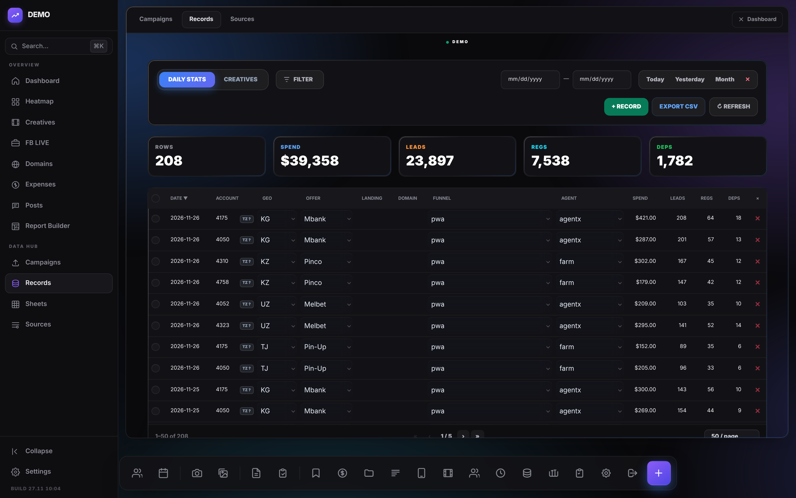
Records — сирі рядки статистики.
04
Dashboard
Гроші за місяць однією сторінкою
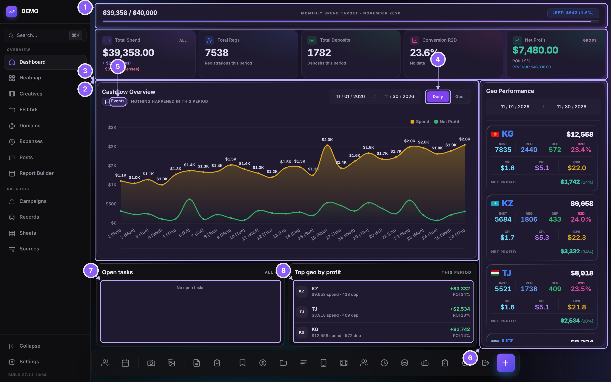
План на місяць — витрачено / план, скільки лишилось.
Картки KPI — спенд, реги, депи, R2D, профіт.
Cashflow Overview — графік по днях.
Daily / Geo — спенд і профіт або лінія на кожне гео.
Events — позначки подій на графіку.
Geo Performance — картка на кожне гео.
Open tasks — твої відкриті задачі.
Top geo by profit — найприбутковіші гео.
Картка
Що показує
Total Spend
Спенд за період; під ним — комісії (fees) і витрати з Expenses. Клік по картці перемикає зріз за моделлю оплати офера: All → CPA → Spend % — що відкручено на офери з оплатою за депозит, а що — на офери з відсотком від спенду. Поточний зріз написаний у кутку картки.
Total Regs / Deposits
Реєстрації й депозити з Keitaro за період.
Conversion R2D
Яка частка реєстрацій дійшла до депозиту.
Net Profit
Дохід (депозити × ставка офера з Settings → Payouts) мінус спенд. Клік перемикає Gross (виручка − спенд) → Net (ще мінус витрати). Під ним ROI і Revenue.
Geo Performance6: інстали, реги, депи, R2D, CPI, CPL, CPA і профіт по кожному гео. Клік по гео відкриває деталі, зокрема як рухалась ціна по днях. Events5 ставить на графік позначки дат, коли щось сталося (бан, зміна стану), — щоб стрибок мав пояснення.
Закриття місяцяСтавки й імпорт можуть змінитися заднім числом. Коли місяць закінчився — Month close у меню місяця: CRM «заморозить» підсумки, і якщо жива цифра потім від'їде, ти це побачиш.
Звіт картинкоюPerformance Summary (фотоапарат у нижній панелі) збирає підсумки в картинку, яку зручно скинути тімліду.
05
FB LIVE
Усі кабінети наживо, прямо з Facebook
Тут ти проводиш більшу частину дня. FB LIVE показує кожен рекламний кабінет: чи він живий, скільки відкрутив сьогодні, скільки лідів, реєстрацій і депозитів, і що всередині — кампанії, адсети, оголошення. Звідси ж їх вмикають і вимикають.
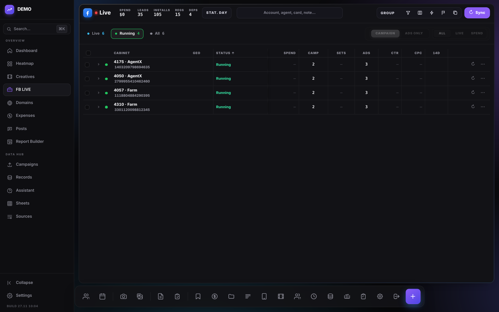
FB LIVE цілком. Нижче — шапка збільшено.
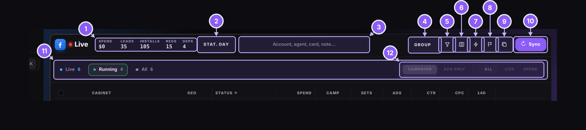
Підсумки дня по всіх кабінетах: Spend, Leads, Installs, Regs, Deps. Клік по Spend — сума по валютах.
Stat. Day — цифри за день таблицею, календар.
Пошук — кабінет, агент, картка, нотатка.
Group — групування: агент, стан, браузер, BM, картка.
Фільтр — мітки гео, «мав спенд сьогодні».
Колонки таблиці.
Rules — правила автовимкнення.
Pages — сторінки й коментарі.
Templates — шаблони запуску.
Sync — оновити з Facebook зараз.
Статуси: Banned, Live, Running, Archived, All.
Вигляд: Campaign / Ads only і All / Live / Spend.
Звідки беруться кабінети
CRM бачить кабінети через токени системних користувачів Facebook (Settings → Integrations → Facebook). Кожен токен прив'язаний до BM і бачить його кабінети. Синхронізація йде сама щогодини; Sync10 оновлює негайно — поруч видно, скільки хвилин тому був останній синк.
Статуси й мітки
Вкладки 11: Banned (заблоковані Facebook), Live (є активні оголошення), Running (крутять зараз), Archived (сховані тобою), All. Число поруч — скільки кабінетів у статусі. Кабінет в архіві разом з історією видаляється автоматично через 3 дні.
У стовпці GEO — гео кабінета. Мітка не зникає, щойно траф зупинився: вона тримається, поки в кабінеті був спенд, — щоб кабінет на паузі не губив свого гео. Фільтр 5 показує лише вибрані гео. Крапка на іконці фільтра — фільтр увімкнений, тобто показано не все.
Що всередині кабінета
Стрілка ліворуч від кабінета розгортає дерево: кампанія → адсет → оголошення, з бюджетом, спендом, CTR, CPC і перемикачем на кожному рядку.
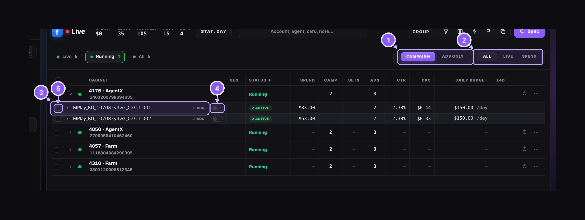
Campaign / Ads only — деревом або самі оголошення, найдорожчі першими.
All / Live / Spend — усе / лише те, що Facebook реально показує / усе, що сьогодні щось коштувало.
Рядок кампанії — клік розгортає адсети.
Перемикач — вмикає/вимикає в самому Facebook.
Галочка — вибір кількох рядків для масових дій.
Галочка на кабінеті відмічає всі його розгорнуті рядки. Якщо відмічена кампанія, Ads only показує лише її оголошення.
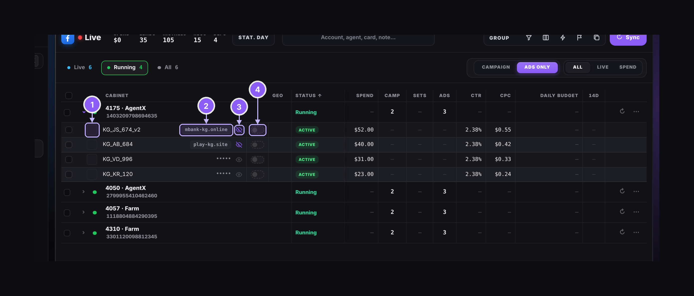
Мініатюра креативу з Google Drive — наведи, щоб побачити більше.
Домен, на який веде оголошення.
Око — показати/сховати, де крутиться оголошення (домен, кампанія, адсет).
Перемикач оголошення.
Панель кабінета
Клік по рядку кабінета відкриває панель поверх таблиці — стовпці під нею не зсуваються.
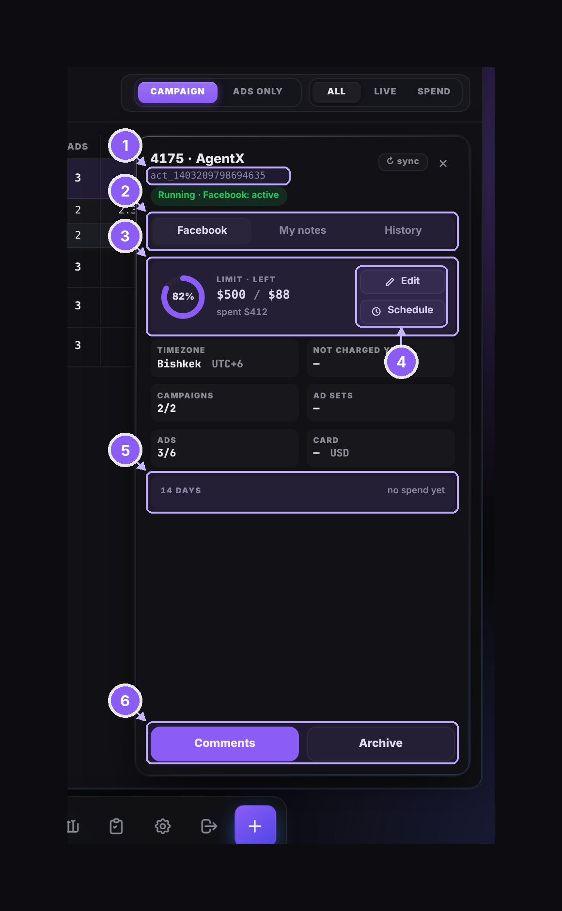
act_… — номер кабінета, клік копіює. Поруч статус у CRM і у Facebook, sync лише цього кабінета.
Вкладки: Facebook, My notes, History.
Ліміт кільцем: скільки витрачено й скільки лишилось.
Edit / Schedule — змінити ліміт зараз або запланувати.
14 days — спенд кабінета за два тижні.
Comments / Archive — коментарі під оголошеннями; прибрати кабінет у архів.
Між лімітом і графіком — факти: часовий пояс, ще не списане з картки, кількість кампаній, адсетів і оголошень, картка, сторінка. History — журнал: бани, зміни стану, твої правки з часом.
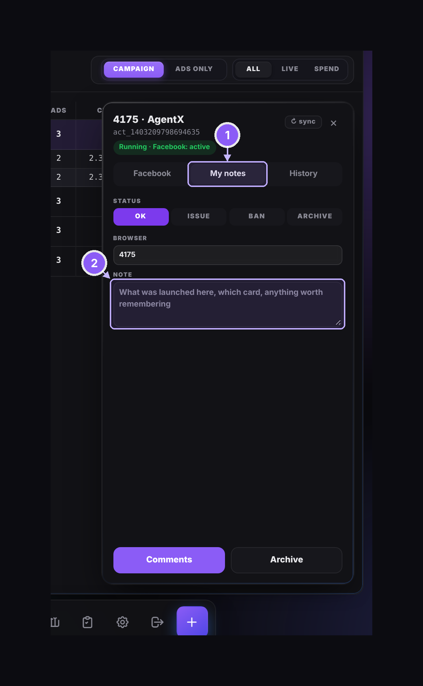
My notes — твій статус кабінета (OK / Issue / Ban / Archive) і поля.
Нотатка: що тут запускали, яка картка, що варто пам'ятати.
Ліміт і бюджетЯкщо Facebook відмовив у зміні бюджету чи ліміту, CRM покаже його відповідь як є. Найчастіше це обмеження самого Facebook (наприклад, на занадто різке підняття), а не CRM.
06
Rules, Pages, Templates, Stat. Day
Інструменти FB LIVE
Rules — правила автовимкнення
Правило — це «якщо оголошення витратило понад X і метрика гірша за Y — вимкнути». Перевіряє їх сервер за розкладом, тож вкладку можна закрити. Метрики: Cost per link click, Cost per lead, CPM, Spend today, Link CTR, Leads, Cost per registration, Cost per purchase та інші.
Панель правил праворуч: + Rule — нове правило, Check now — перевірити негайно, нижче — журнал останніх дій.
Якщо в правилі є і інстал, і лід: коли даних по інсталу немає, правило дивиться на лід; коли немає й ліда — вимикає.
Правило враховує статус кабінета: забанений кабінет не перевіряється, і журнал не засмічується помилками.
CTR — не той, що в Ads ManagerМи міряємо Link CTR — лише переходи за посиланням. «CTR (all)» у Facebook рахує будь-які кліки й у рази більший. Поріг, виставлений «на око» з Ads Manager, вимкне майже все.
Pages — сторінки й коментарі
Список сторінок (фанок), до яких дотягуються твої токени, і коментарі під їхніми постами. Сторінки з новими коментарями відкриваються першими. Ті самі коментарі приходять у Telegram з підписом, з якої сторінки.
Templates — шаблони запуску
Відміть галочкою робочу кампанію у FB LIVE і на смузі вибору натисни ☆ Template — CRM збереже знімок кампанії: адсети, таргетинг, піксель або апку, креативи. Шаблон живе далі, навіть якщо кабінет-зразок забанили.
Templates → вибери шаблон → Launch → відміть кабінети; за потреби зміни назву, бюджет і гео.
Check — для кожного кабінета видно, чи бачить він сторінку поста, піксель, апку, валюту. Саме на цьому запуски ламаються — тут це видно до запуску.
Launch paused — кампанія створюється в кожному кабінеті на паузі. Вмикаєш сам.
Stat. Day — цифри за день
Одна таблиця за день з групуванням: гео / кабінет / воронка / креатив. Сьогодні — живі дані з останнього Sync; минулі дні — календарем. Зручно вранці подивитися вчорашній день, не чекаючи Add data.
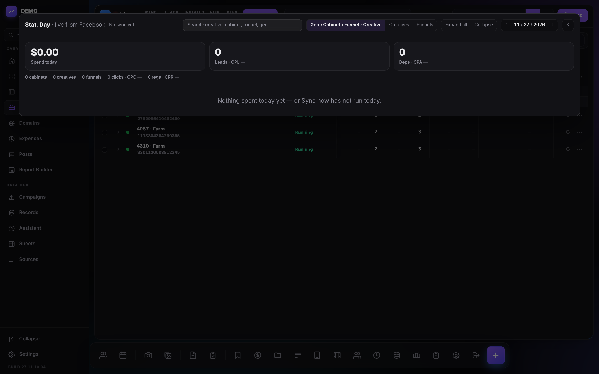
07
Creative Analyzer і Унікалізатор
Які креативи працюють і як зробити з них нові
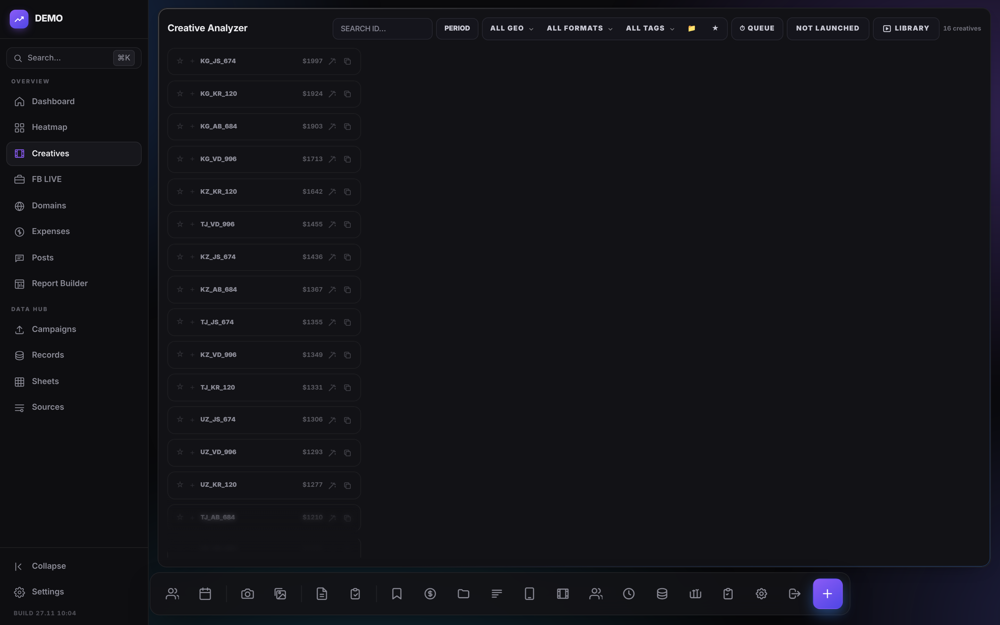
Creative Analyzer цілком. Нижче — верхні кнопки збільшено.
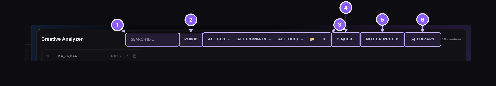
Search ID — пошук креативу.
Період — сьогодні, вчора, місяць або свої дати.
Фільтри: гео, формат, теги; 📁 — списком по тегах; ★ — з мітками.
Queue — черга на тест; кнопка поруч відправляє чергу в унікалізатор.
Not launched — файли з Drive, які ще жодного разу не крутились.
Library — бібліотека креативів з Drive, клік — превʼю.
Клік по креативу в списку відкриває його цифри праворуч. Там же вкладки модерації (що Facebook відхилив) і згадувань — де ти писав про цей креатив у нотатках.
Унікалізатор
Нижня панель → Uniqueizer. Робить з одного креативу кілька різних варіантів прямо в браузері — файл нікуди не відправляється.
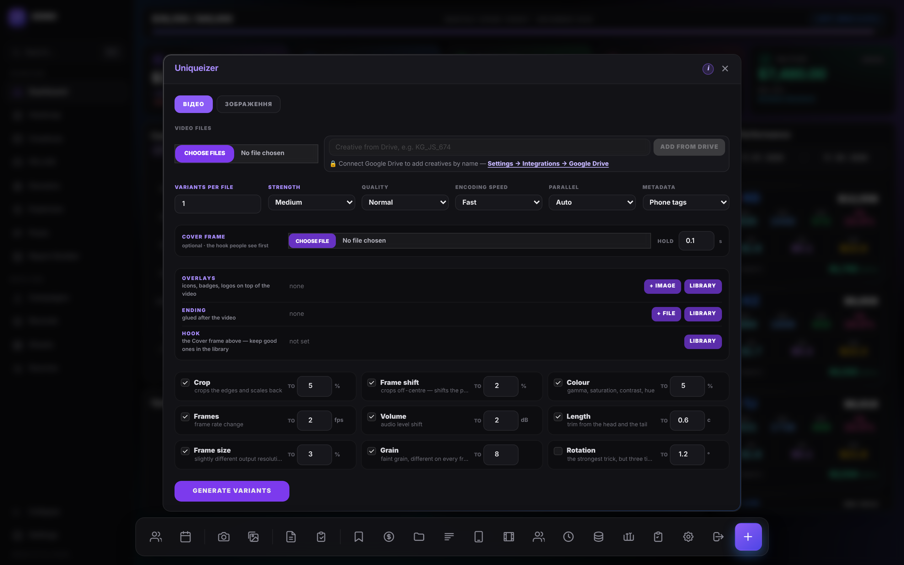
Відео: обрізка, поворот, колір, шум, швидкість, гучність тощо — кожен параметр вмикається окремо, силу задаєш сам.
Накладання: PNG-іконка чи плашка, яку ставиш мишкою на кадр, — однаково лягає на всі варіанти.
Хуки й кінцівки: бібліотека коротких вставок на початок і кінець відео.
Метадані: очищення або підміна службових даних файлу.
Ефективність за днями тижня: у які дні спенд дешевший, а R2D і профіт вищі. Червоне — гірше, зелене — краще.
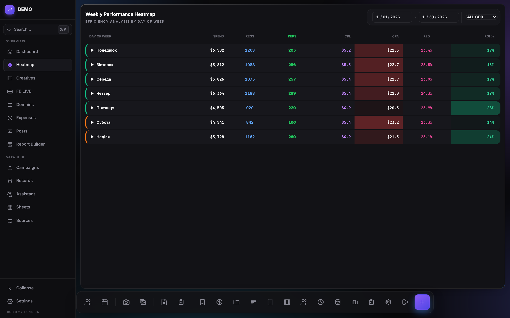
Report Builder
Конструктор звіту: групування (гео, кабінет, агент, офер, воронка, креатив, місяць…), фільтри, набір колонок. Збираєш потрібний розріз — і отримуєш таблицю з підсумком.
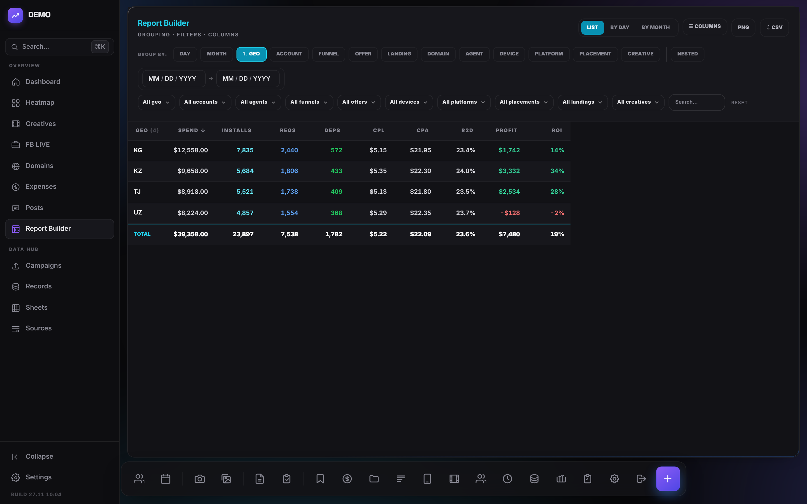
Domains
Домени PWA і чи вони відповідають. Список вставляється кнопкою Paste list, перевірка — Check. Браузер бачить лише «відповідає / не відповідає»; точні коди перевіряє сервер.
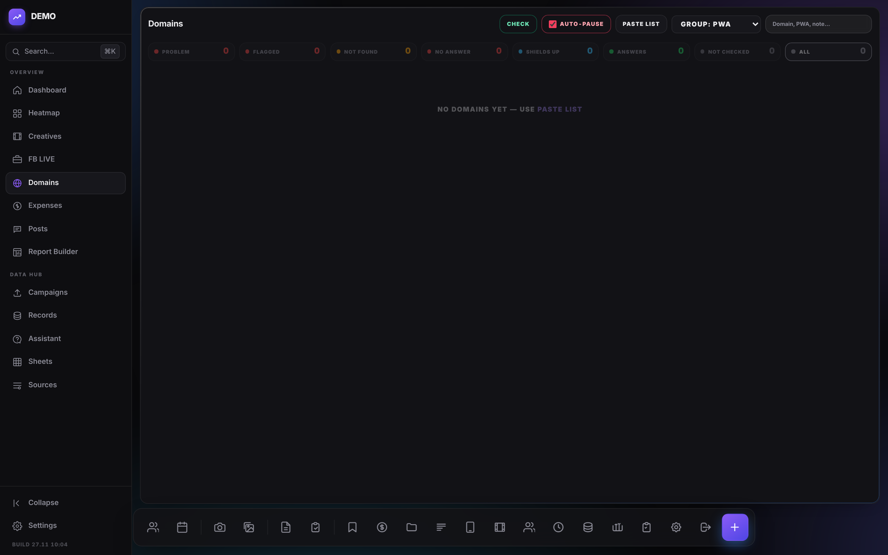
Expenses
Витрати поза спендом: акаунти, проксі, сервіси. Вони віднімаються від профіту (Net Profit у режимі Net). Додаєш праворуч: дата, сума, категорія, нотатка.
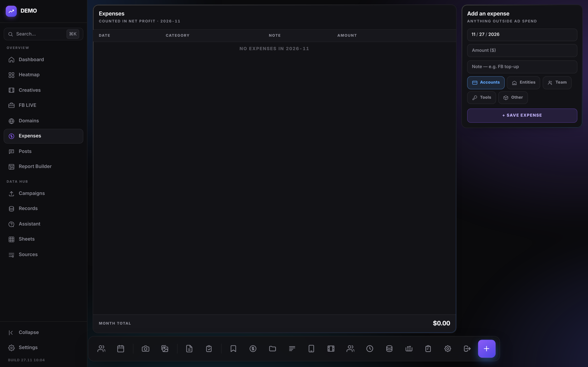
Posts
Публікація постів на сторінки: текст, посилання, картинка — зараз або за розкладом. Публікує сервер, токен сторінки в браузер не потрапляє.
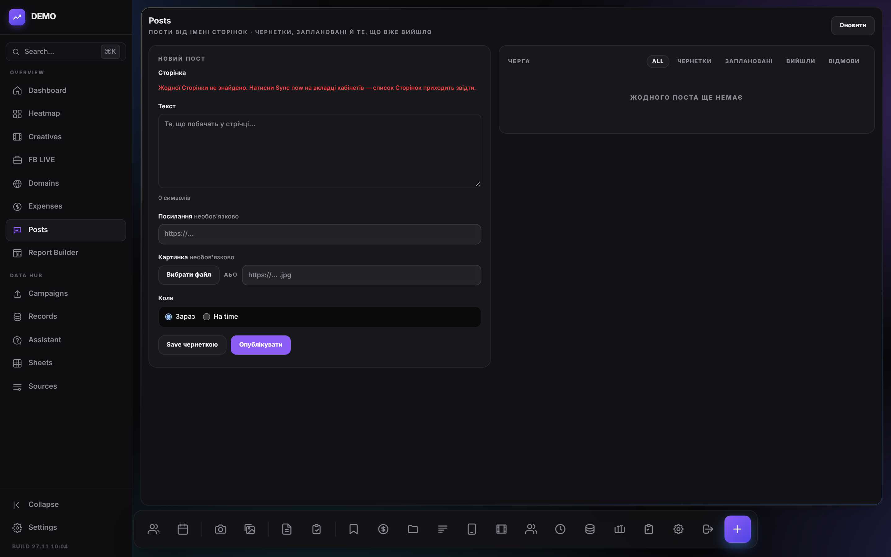
09
Data hub і Sheets
Завантаження, сирі дані й довідники
Campaigns
Те саме, що Add data: завантаження звітів Facebook і Keitaro (розділ 3).
Records
Усі завантажені рядки: фільтр, правка, експорт CSV.
Sources
Довідники. Cabinets — який кабінет якому агенту й профілю належить (Link cabinet); якщо Add data каже «кабінет без агента» — виправляється тут. Funnels, Keitaro — воронки й KTID. PWA і APP — шаблони назви кампанії (розділ 3).
Sheets
Google Таблиці й сторінки Notion команди прямо в CRM — щоб не перемикатися між вкладками.
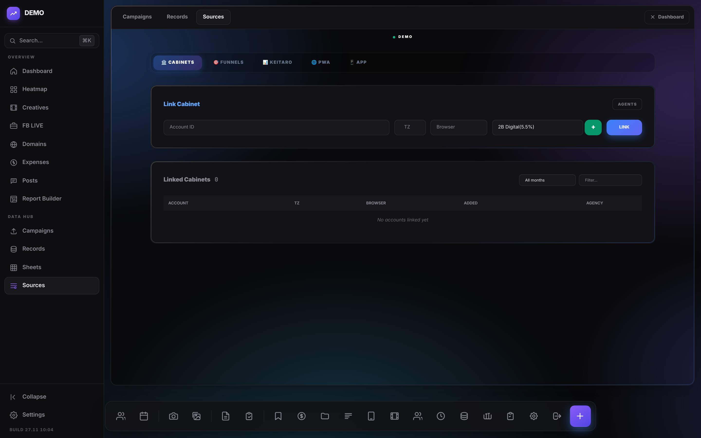
Sources → Cabinets: прив'язка кабінета до агента й профілю.
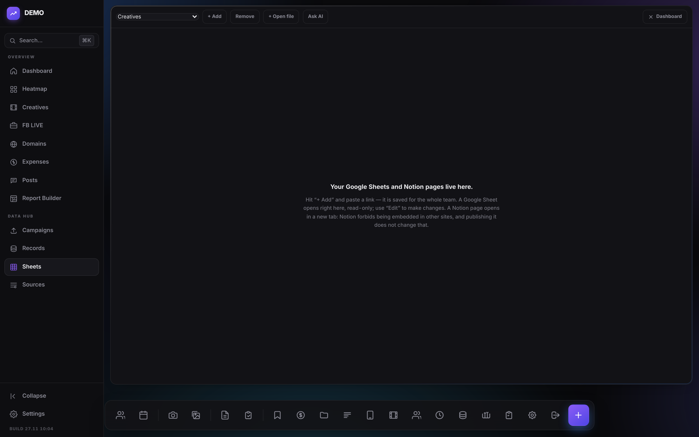
Sheets: додай таблицю чи сторінку Notion кнопкою + Add.
10
Нижня панель
Інструменти, доступні з будь-якої сторінки
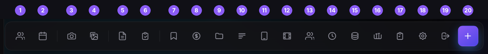
Номер над кнопкою — номер рядка в таблиці.
Кнопка
Навіщо
1 · Команда
Перемкнути команду, чиї дані показано.
2 · Select Month
Місяць для Dashboard і звітів; там же Month close.
3 · Performance Summary
Підсумки картинкою — скинути тімліду.
4 · Gallery
Галерея звітних фото й скріншотів.
5 · Daily Reports
Денні звіти.
6 · Mission Center
Задачі: свої й від тімліда.
7 · Quick Links
Твої закладки: трекер, BM, сервіси.
8 · Bonus Calculator
Розрахунок бонусу; є чернетка з реального (бажано закритого) місяця.
9 · Files
Файли команди в приватному сховищі (посилання на файл живе 10 хвилин).
10 · Texts
Банк текстів: гео → категорія → тексти, у кожного своя мова.
11 · Apps
Апки (прілки) і PWA команди: пакет у магазині, стан, до якої воронки належать.
12 · Uniqueizer
Унікалізатор креативів (розділ 7).
13 · Accounts
Облік кабінетів зі своїми статусами (купівля, стан, нотатки) — окремо від FB LIVE, яка показує живий стан з Facebook.
14 · Local time by geo
Котра зараз година в кожному гео.
15 · DB Logs
Журнал змін у базі: хто і що змінив.
16 · Geo Compare
Порівняння гео між командами.
17 · Data Check
Звірка цифр CRM із Keitaro.
18 · Settings
Налаштування (розділ 11).
19 · Log out
Вихід.
20 · + Add data
Завантажити статистику (розділ 3).
11
Налаштування і Telegram
Settings: General · Layout · Payouts · Integrations
General
План спенду на місяць (Monthly spend target), вигляд графіка: стовпчики, лінія або заливка.
Layout
Які блоки показувати і в якому порядку.
Payouts
Ставки оферів по гео: сума, модель (CPA або % від спенду), увімкнено чи ні. Від цього рахується дохід і профіт — новий офер чи нова ставка мають з'явитися тут.
Integrations
Facebook (токени), Telegram, Google Drive (папка з креативами) та інше.
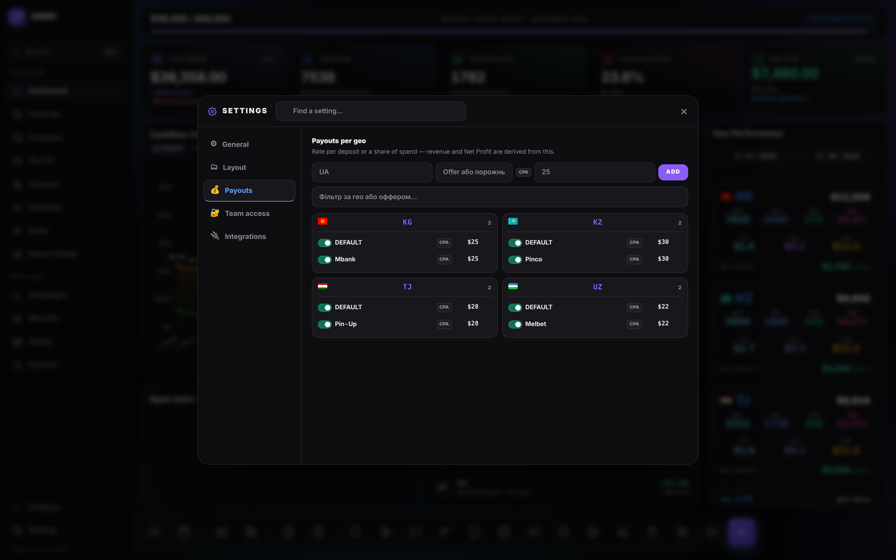
Payouts: ставка на кожен офер у кожному гео.
Підключити Telegram
Settings → Integrations → Telegram.
Отримай код — CRM видасть одноразовий код (живе 15 хвилин).
Відкрий бота команди в Telegram і надішли йому цей код. Готово — сповіщення прив'язані до твого акаунта.
Що приходить: бан кабінета, тиша (кабінет перестав крутити), немає спенду, підсумок дня, а також нові коментарі з назвою сторінки. Які саме події надсилати — обирається там же.
Чому кодомКод видається лише тому, хто вже увійшов у CRM. Так ніхто не підпишеться на чужі сповіщення, просто вписавши чужу пошту.
12
Типові проблеми
Що робити, коли щось не так
Що бачиш
Що робити
Кабінета немає у FB LIVE
Токен його не бачить. Перевір, що системний користувач BM має доступ до кабінета, тоді Sync.
«No page list» у кабінеті
Токен не дотягується до сторінки. Пошар сторінку системному користувачу / застосунку в BM, потім Sync.
Запуск на апку: помилка прав на app events
Апка не пошарена кабінету. У налаштуваннях застосунку додай рекламні кабінети (Advertising accounts) або пошар апку через BM.
Не змінюється бюджет або ліміт
Прочитай текст помилки — це відповідь Facebook. CRM сама зміну не блокує.
На Dashboard порожньо за сьогодні
Нормально: Dashboard рахує з Add data. Живі цифри — у FB LIVE і Stat. Day.
Профіт нульовий або дивний
Немає ставки для цього гео/офера в Settings → Payouts, або офер вимкнений.
Add data: «невпізнані рядки»
Назва кампанії не лягає на шаблон. Виправ назву або шаблон (Data hub → Sources → PWA / APP).
Спенд є, а депів/регів немає
Кабінет не доданий у Sources → Cabinets або в нього не вказаний часовий пояс — рядки Keitaro відкинуто («Skipped — no timezone linked»). Додай кабінет із поясом і залий день ще раз.
Add data: «кабінет без агента»
Прив'яжи кабінет у Data hub → Sources → Cabinets.
Воронка «Unknown (…)»
KTID немає в Sources → Funnels — додай воронку.
Правило нічого не вимикає / вимикає все
Перевір поріг спенду й метрику (особливо Link CTR — розділ 6) і журнал правила.
Сайт поводиться дивно після оновлення
Онови сторінку (Ctrl+F5). Номер збірки — внизу меню.
Коли пишеш про помилкуДодай: що натискав, скріншот, номер збірки з низу меню і кабінет (act_…). Так проблему знайдуть удесятеро швидше.